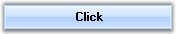

ButtonAdv is an advanced button control capable of displaying images with different alignments and various border styles. It contains some additional feature to the standard Windows Forms Button. It can be configured into any of the predefined ButtonTypes such as Calculator, Up, Down, and so on. Also it can afford the XP or Office styles.

Figure 146: ButtonAdv Control
 Features
Features